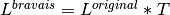
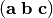
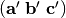
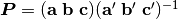

Spglib for Python¶
Installation¶
Source codes, examples, and the test are downloaded SourceForge or GitHub.
Using package distribution service¶
These packages are made and maintained by Paweł T. Jochym.
Using pip¶
Numpy is required before the python-spglib installation. The command to install spglib is:
% pip install spglib
If you see the error message like below in the installation process:
_spglib.c:35:20: fatal error: Python.h: No such file or directory
development tools for building python module are additionally necessary and are installed using OS’s package management system, e.g.,:
sudo apt-get install python-dev
Using conda¶
Conda is another choice for Linux (64bit) users:
% conda install -c atztogo spglib
Currently conda packages for the other OS, e.g., Mac and windows, are not prepared by the main developers of spglib, but the following channel may be used:
% conda install -c materials pymatgen spglib
Building using setup.py¶
To manually install python-spglib using setup.py, python header
files (python-dev), C-compiler (e.g., gcc, clang), and numpy are
required before the build. The installation steps are shown as
follows:
Go to the
pythondirectoryType the command:
% python setup.py install --user
Document about where spglib is installed is found at the links below:
Test¶
The test script test_spglib.py is found in python/test
directory. Got to this directory and run this script. It will be like below:
% python test_spglib.py
test_find_primitive (__main__.TestSpglib) ... ok
test_get_symmetry (__main__.TestSpglib) ... ok
test_get_symmetry_dataset (__main__.TestSpglib) ... ok
test_refine_cell (__main__.TestSpglib) ... ok
----------------------------------------------------------------------
Ran 4 tests in 13.147s
OK
How to import spglib module¶
Change in version 1.9.0!
For versions 1.9.x or later:
import spglib
For versions 1.8.x or before:
from pyspglib import spglib
If the version is not sure:
try:
import spglib as spg
except ImportError:
from pyspglib import spglib as spg
Version number¶
In version 1.8.3 or later, the version number is obtained by
spglib.__version__ or get_version.
Variables¶
Crystal structure (cell)¶
A crystal structure is given by a tuple. This tuple format is
supported at version 1.9.1 or later. Optionally, an ASE Atoms-like
object is also supported. An alternative Atoms class (atoms.py)
that contains minimum set of methods is prepared in the examples
directory. When using ASE Atoms-like object, get_symmetry with
collinear polarizations is not supported.
The tuple format is shown as follows. There are three or four elements
in the tuple: cell = (lattice, positions, numbers) or cell =
(lattice, positions, numbers, magmoms) where magmoms represents
collinear polarizations on atoms and is optional.
Lattice parameters lattice are given by a 3x3 matrix with floating
point values, where  are
given as rows, which results in the transpose of the definition for
C-API (lattice). Fractional atomic positions
are
given as rows, which results in the transpose of the definition for
C-API (lattice). Fractional atomic positions
positions are given by a Nx3 matrix with floating point values,
where N is the number of atoms. Numbers to distinguish atomic species
numbers are given by a list of N integers. The collinear polarizations
magmoms only work with get_symmetry and are given
as a list of N floating point values.
lattice = [[a_x, a_y, a_z],
[b_x, b_y, b_z],
[c_x, c_y, c_z]]
positions = [[a_1, b_1, c_1],
[a_2, b_2, c_2],
[a_3, b_3, c_3],
...]
numbers = [n_1, n_2, n_3, ...]
magmoms = [m_1, m_2, m_3, ...] # Only works with get_symmetry
Version 1.9.5 or later:
When a crystal structure is not properly given, the methods that use
the crsytal strcutre will return None.
Symmetry tolerance (symprec)¶
Distance tolerance in Cartesian coordinates to find crystal symmetry.
Methods¶
get_version¶
New in version 1.8.3
version = get_version()
This returns version number of spglib by tuple with three numbers.
get_error_message¶
New in version 1.9.5
This method may be used to see why spglib failed though error handling in spglib is not very sophisticated.
error_message = get_error_message()
get_spacegroup¶
spacegroup = get_spacegroup(cell, symprec=1e-5)
International space group short symbol and number are obtained as a
string. With symbol_type=1, Schoenflies symbol is given instead of
international symbol.
get_symmetry¶
symmetry = get_symmetry(cell, symprec=1e-5)
Symmetry operations are obtained as a dictionary. The key rotation
contains a numpy array of integer, which is “number of symmetry
operations” x “3x3 matrices”. The key translation contains a numpy
array of float, which is “number of symmetry operations” x
“vectors”. The orders of the rotation matrices and the translation
vectors correspond with each other, e.g. , the second symmetry
operation is organized by the set of the second rotation matrix and second
translation vector in the respective arrays. Therefore a set of
symmetry operations may obtained by:
[(r, t) for r, t in zip(dataset['rotations'], dataset['translations'])]
The operations are given with respect to the fractional coordinates (not for Cartesian coordinates). The rotation matrix and translation vector are used as follows:
new_vector[3x1] = rotation[3x3] * vector[3x1] + translation[3x1]
The three values in the vector are given for the a, b, and c axes,
respectively. The key equivalent_atoms gives a mapping table of
atoms to symmetrically independent atoms. This is used to find
symmetrically equivalent atoms. The numbers contained are the indices
of atoms starting from 0, i.e., the first atom is numbered as 0, and
then 1, 2, 3, ... np.unique(equivalent_atoms) gives representative
symmetrically independent atoms. A list of atoms that are
symmetrically euivalent to some independent atom (here for example 1
is in equivalent_atom) is found by
np.where(equivalent_atom=1)[0]. When the search failed, None
is returned.
If cell is given as a tuple and collinear polarizations are given
as the fourth element of this tuple, symmetry operations are searched
considering this freedome. In ASE Atoms-class object, this is not supported.
refine_cell¶
Behaviour changed in version 1.8.x
lattice, scaled_positions, numbers = refine_cell(cell, symprec=1e-5)
Bravais lattice (3x3 numpy array), atomic scaled positions (a numpy
array of [number_of_atoms,3]), and atomic numbers (a 1D numpy array)
that are symmetrized following space group type are returned. When the
search failed, None is returned.
The detailed control of standardization of unit cell may be done using
standardize_cell.
find_primitive¶
Behaviour changed in version 1.8.x
lattice, scaled_positions, numbers = find_primitive(cell, symprec=1e-5)
When a primitive cell is found, lattice parameters (3x3 numpy array),
scaled positions (a numpy array of [number_of_atoms,3]), and atomic
numbers (a 1D numpy array) is returned. When the search failed,
None is returned.
The detailed control of standardization of unit cell can be done using
standardize_cell.
standardize_cell¶
New in version 1.8.x
lattice, scaled_positions, numbers = standardize_cell(bulk, to_primitive=False, no_idealize=False, symprec=1e-5)
to_primitive=True is used to create the standardized primitive
cell, and no_idealize=True disables to idealize lengths and angles
of basis vectors and positions of atoms according to crystal
symmetry. Now refine_cell and find_primitive are shorthands of
this method with combinations of these options. When the search
failed, None is returned. is returned. More detailed explanation
is shown in the spglib (C-API) document.
get_symmetry_dataset¶
At version 1.9.4, the member ‘choice’ is added.
dataset = get_symmetry_dataset(cell, symprec=1e-5)
dataset is a dictionary. The keys are:
number: International space group numberinternational: International short symbolhall: Hall symbolhall_number: Hall number. This number is used in get_symmetry_from_database and get_spacegroup_type.choice: Centring, origin, basis vector settingtransformation_matrix: Transformation matrix from lattice of input cell to Bravais lattice origin shift: Origin shift choice in the setting of Bravais latticewyckoffs: Wyckoff lettersequivalent_atoms: Mapping table to equivalent atomsrotationsandtranslations: Rotation matrices and translation vectors. See get_symmetry for more details.pointgroup: Symbol of the crystallographic point group in the Hermann–Mauguin notation.std_lattice,std_positions,std_types: Standardized crystal structure corresponding to a Hall symbol found. These are equivalently given in the array formats oflattice,positions, andnumberspresented at Crystal structure (cell), respectively.
When the search failed, None is returned. See more details of the
keys at Dataset.
get_symmetry_from_database¶
symmetry = get_symmetry_from_database(hall_number)
A set of crystallographic symmetry operations corresponding to
hall_number is returned by a dictionary where rotation parts and
translation parts are accessed by the keys rotations and
translations, respectively. The definition of hall_number is
found at Space group type.
When something wrong happened, None is returned.
get_spacegroup_type¶
New at version 1.9.4
spacegroup_type = get_spacegroup_type(hall_number)
This function allows to directly access to the space-group-type
database in spglib (spg_database.c). A dictionary is returned. To
specify the space group type with a specific choice, hall_number
is used. The definition of hall_number is found at
Space group type. The keys of the returned
dictionary is as follows:
number
international_short
international_full
international
schoenflies
hall_symbol
choice
pointgroup_schoenflies
pointgroup_international
arithmetic_crystal_class_number
arithmetic_crystal_class_symbol
Here spacegroup_type['international_short'] is equivalent to
dataset['international'] of get_symmetry_dataset,
spacegroup_type['hall_symbol'] is equivalent to
dataset['hall'] of get_symmetry_dataset, and
spacegroup_type['pointgroup_international'] is equivalent to
dataset['pointgroup_symbol'] of get_symmetry_dataset.
When something wrong happened, None is returned.
niggli_reduce¶
New at version 1.9.4
niggli_lattice = niggli_reduce(lattice, eps=1e-5)
Niggli reduction is achieved using this method. The algorithm detail
is found at https://atztogo.github.io/niggli/ and the references are
there in. Original basis vectors are stored in lattice and the
Niggli reduced basis vectors are given in niggli_lattice. The
format of basis vectors are found at
Crystal structure (cell). esp is the tolerance
parameter, but unlike symprec the unit is not a length. This is
used to check if difference of norms of two basis vectors is close to
zero or not and if two basis vectors are orthogonal by the value of
dot product being close to zero or not. The detail is shown at
https://atztogo.github.io/niggli/.
When the search failed, None is returned.
The transformation from original basis vectors  to final baiss vectors  is achieved by linear combination of basis vectors with integer coefficients without rotating coordinates. Therefore the transformation matrix is obtained by  and the matrix elements have to be almost integers.
delaunay_reduce¶
New at version 1.9.4
delaunay_lattice = delaunay_reduce(lattice, eps=1e-5)
Delaunay reduction is achieved using this method. The algorithm is
found in the international tables for crystallography
volume A. Original basis vectors are stored in lattice and the
Delaunay reduced basis vectors are given in delaunay_lattice,
where the format of basis vectors are shown in
Crystal structure (cell). esp is the tolerance
parameter, but unlike symprec the unit is not a length. This is
used as the criterion if volume is close to zero or not and if two
basis vectors are orthogonal by the value of dot product being close
to zero or not.
When the search failed, None is returned.
The transformation from original basis vectors to final basis vectors is achieved by linear combination of basis vectors with integer coefficients without rotating coordinates. Therefore the transformation matrix is obtained by and the matrix elements have to be almost integers.
get_ir_reciprocal_mesh¶
mapping, grid = get_ir_reciprocal_mesh(mesh, cell, is_shift=[0, 0, 0])
Irreducible k-points are obtained from a sampling mesh of k-points.
mesh is given by three integers by array and specifies mesh
numbers along reciprocal primitive axis. is_shift is given by the
three integers by array. When is_shift is set for each reciprocal
primitive axis, the mesh is shifted along the axis in half of adjacent
mesh points irrespective of the mesh numbers. When the value is not 0,
is_shift is set.
mapping and grid are returned. grid gives the mesh points in
fractional coordinates in reciprocal space. mapping gives mapping to
the irreducible k-point indices that are obtained by
np.unique(mapping)
Here np means the numpy module. The grid point is accessed by
grid[index].
When the sesarch failed, None is returned.
An example is shown below:
import numpy as np
import spglib
lattice = np.array([[0.0, 0.5, 0.5],
[0.5, 0.0, 0.5],
[0.5, 0.5, 0.0]]) * 5.4
positions = [[0.875, 0.875, 0.875],
[0.125, 0.125, 0.125]]
numbers= [1,] * 2
cell = (lattice, positions, numbers)
print(spglib.get_spacegroup(cell, symprec=1e-5))
mesh = [8, 8, 8]
#
# Gamma centre mesh
#
mapping, grid = spglib.get_ir_reciprocal_mesh(mesh, cell, is_shift=[0, 0, 0])
# All k-points and mapping to ir-grid points
for i, (ir_gp_id, gp) in enumerate(zip(mapping, grid)):
print("%3d ->%3d %s" % (i, ir_gp_id, gp.astype(float) / mesh))
# Irreducible k-points
print("Number of ir-kpoints: %d" % len(np.unique(mapping)))
print(grid[np.unique(mapping)] / np.array(mesh, dtype=float))
#
# With shift
#
mapping, grid = spglib.get_ir_reciprocal_mesh(mesh, cell, is_shift=[1, 1, 1])
# All k-points and mapping to ir-grid points
for i, (ir_gp_id, gp) in enumerate(zip(mapping, grid)):
print("%3d ->%3d %s" % (i, ir_gp_id, (gp + [0.5, 0.5, 0.5]) / mesh))
# Irreducible k-points
print("Number of ir-kpoints: %d" % len(np.unique(mapping)))
print((grid[np.unique(mapping)] + [0.5, 0.5, 0.5]) / mesh)